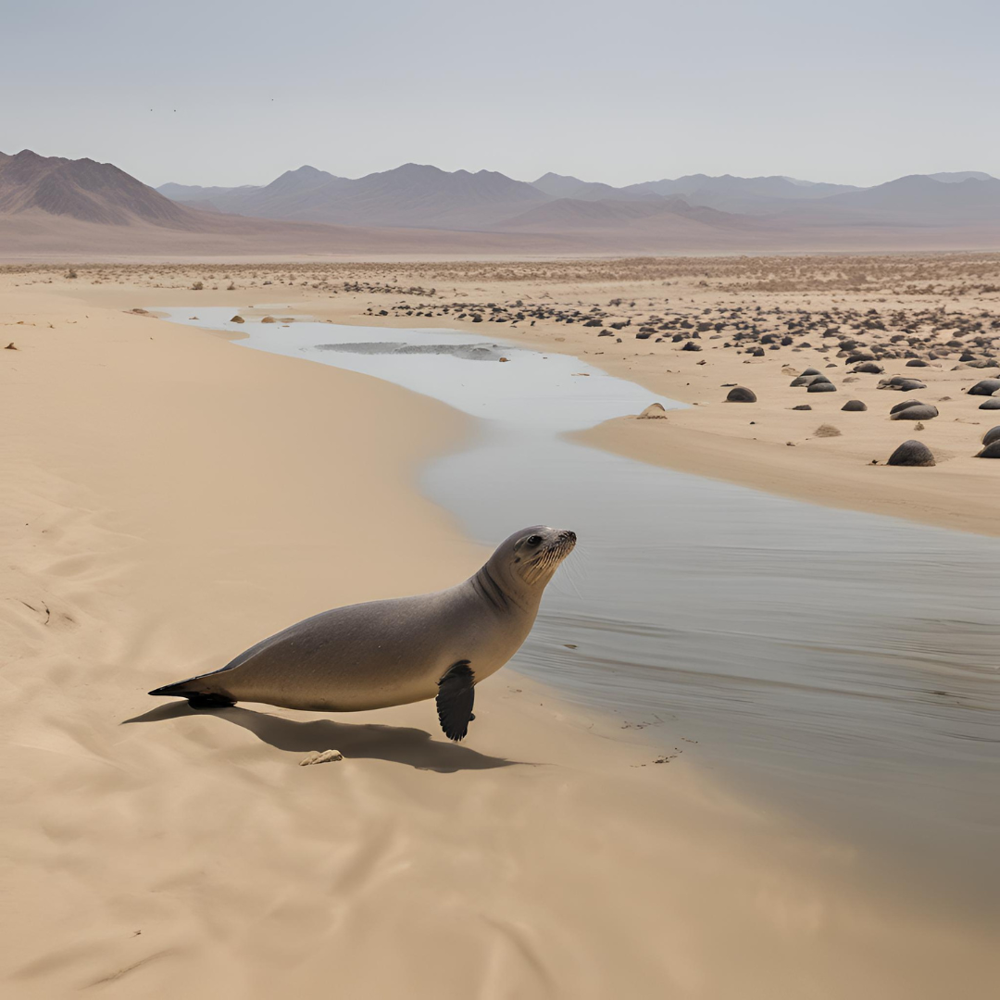
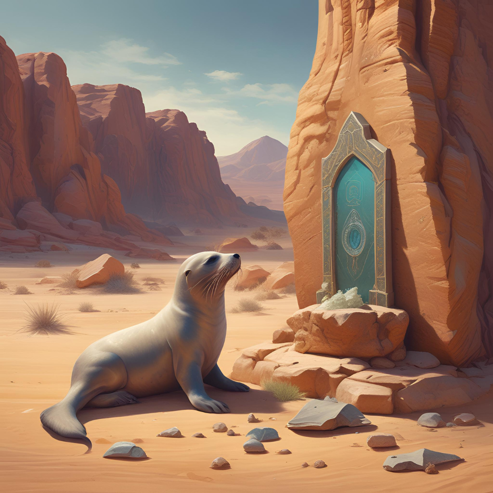

모험의 시작
옛날 옛적 사막 한가운데 작은 오아시스가 있었다. 그 오아시스에는 사막물개라 불리는 특별한 생명체들이 살고 있었다. 사막물개는 물과 육지를 자유롭게 오가며 살아가는 존재였다. 어느 날, 사막에 큰 가뭄이 찾아와 오아시스의 물이 점점 줄어들기 시작했다.
용감한 결심
사막물개의 리더인 디저트는 마을을 구하기 위해 모험을 떠나기로 결심했다. 그는 다른 물개들과 작별 인사를 나누고, 전설 속에만 존재하는 생명의 샘을 찾아 나섰다. 그 샘의 물은 영원히 마르지 않는다는 이야기가 전해지고 있었다.
위험한 여정
디저트는 끝없는 모래 언덕을 넘어, 뜨거운 태양 아래를 걸으며 수많은 어려움을 겪었다. 사나운 모래폭풍과 마주치고, 밤에는 추위에 떨기도 했다. 그러나 디저트는 결코 포기하지 않았다. 그의 마음속에는 마을을 구하겠다는 굳은 의지가 있었다.
생명의 샘
마침내 디저트는 전설 속의 생명의 샘을 발견했다. 샘은 맑고 푸른 물로 가득 차 있었고, 주변에는 푸른 식물들이 무성했다. 디저트는 샘에서 물을 퍼 담아 돌아오는 길에 또다시 많은 어려움을 겪었지만, 마침내 무사히 오아시스로 돌아왔다.
구원의 영웅
오아시스가 가져온 물 덕분에 오아시스 마을은 다시 살아났다. 모든 물개들은 그를 영웅으로 찬양했다. 사막물개 디저트의 용기와 헌신 덕분에 그들은 다시 평화로운 삶을 살 수 있게 되었다. 디저트는 영원히 그들의 마음속에 남아있는 영웅이 되었다.
사막의 유적
디저트가 생명의 샘을 찾아 돌아온 후, 사막물개들은 디저트의 모험에 영감을 받아 사막의 숨겨진 비밀을 탐험하기로 결심했다. 그 과정에서 디저트는 신비한 고대 유적을 발견하게 되었다.
유적의 발견
디저트는 여러 날 동안 모래폭풍과 뜨거운 태양을 견디며 유적을 찾아 나섰다. 마침내, 그는 모래 속에 숨겨진 고대 유적의 입구를 발견하게 되었다. 그곳에는 오랜 세월 동안 잊혀진 신비로운 상징들과 고대의 글씨들이 새겨져 있었다.
비밀의 해독
유적 내부로 들어가자, 디저트는 고대 문명을 이해할 수 있는 단서를 발견했다. 벽에 새겨진 글씨들은 사막물개들의 역사와 관련된 중요한 정보를 담고 있었다. 디저트는 이를 해독하며 고대 문명의 지혜를 배우게 되었다.
유물의 발견
디저트는 유적 깊숙한 곳에서 특별한 유물을 발견했다. 이 유물은 오아시스를 영원히 유지시킬 수 있는 마법의 힘을 지니고 있었다. 그는 이 유물을 가지고 마을로 돌아가, 마을의 번영을 도모했다.
새로운 시대의 시작
디저트가 발견한 유물 덕분에 마을은 다시 한번 번영의 길을 걷게 되었다. 모든 물개들은 디저트의 발견을 축하하며 그를 새로운 시대의 영웅으로 존경했다. 디저트는 고대의 지혜를 바탕으로 마을을 이끌어 나갔고, 사막물개의 전설은 계속해서 이어지게 되었다.
디저트는 유적에서 배운 지혜를 바탕으로 새로운 기술을 개발하고, 마을을 더욱 발전시켰다. 그의 노력 덕분에 사막물개들은 더 이상 가뭄에 시달리지 않게 되었고, 마을은 번영을 이어갔다.
또한, 디저트는 고대 문명을 탐구하는 다른 모험가들과 협력하여 사막 곳곳에 숨겨진 또 다른 유적들을 찾아 나섰다. 그 과정에서 그는 많은 친구들을 만나고, 더 큰 모험을 경험하게 되었다.
디저트의 이야기는 사막물개들에게 큰 영감을 주었고, 많은 젊은 물개들이 그의 뒤를 이어 새로운 모험을 꿈꾸게 되었다. 그의 이름은 영원히 기억되며, 사막물개의 전설은 계속해서 이어져 나갔다.